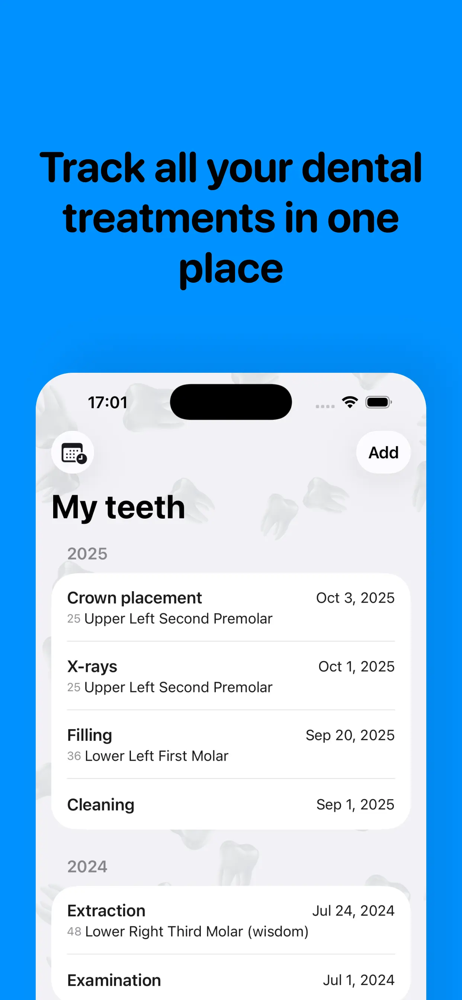
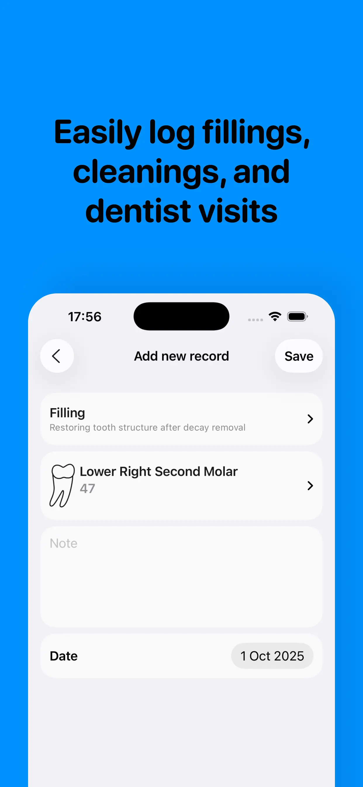
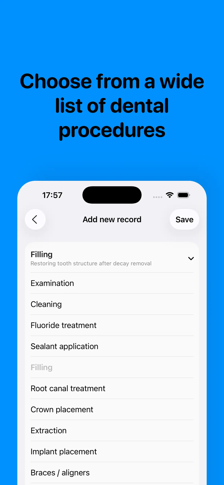
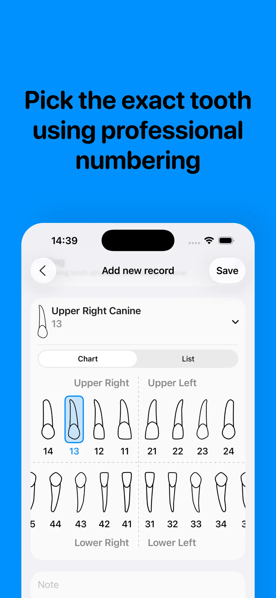
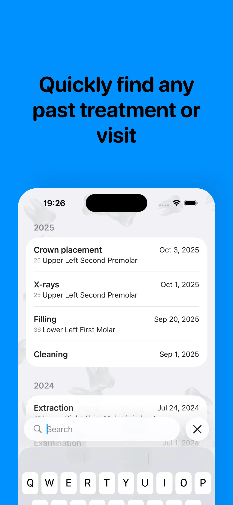

Track your dental journey with ease.
Record appointments, procedures, and maintain a complete history of your oral health — all in one place.
Get the AppTeeth helps you keep a clear record of dentist visits, procedures, affected teeth, and follow-up reminders, so your dental history stays easy to review whenever you need it.
Whether you want to remember when a filling was done, check which tooth was treated, or keep personal records ready for your next appointment, the app keeps everything in one simple timeline on your iPhone.





Teeth is an iOS app designed to help you track and manage your dental health history. It allows you to record dental appointments, procedures, treatments, and maintain a complete record of your oral health journey all in one convenient place.
Yes, Teeth - Dental Journal is free to download and use. You can track all your dental appointments, procedures, and maintain your complete dental history without any subscription fees.
You can track a wide variety of dental information including: dental appointments, procedures performed, specific teeth affected, treatment notes, dentist information, dates of service, and any other details related to your oral health care.
We are working on it! Currently, each app installation is designed for one person's dental records.
Yes, your privacy is our top priority. All your dental health data is stored securely on your device. We do not collect, share, or sell your personal dental information to third parties.
The app is designed to keep your records easily accessible on your device. For specific export features or data portability questions, please contact our support team.
Teeth - Dental Journal requires iOS 18.0 or later. Make sure your device is running a compatible version of iOS for the best experience.
Yes, the app includes reminder functionality to help you stay on top of your dental appointments and routine checkups, ensuring you never miss an important visit.
Your data can be backed up through your device's standard iOS backup process via iCloud or iTunes. This ensures your dental records are safe even if you need to restore your device.
We'd love to hear from you! Please visit our Support page to submit feedback, report bugs, or suggest new features. Your input helps us make the app better for everyone.